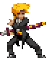
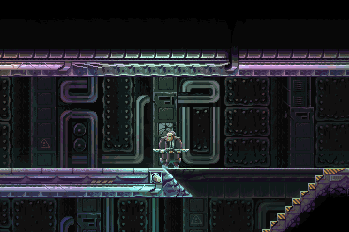
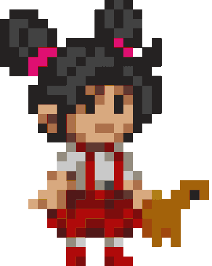
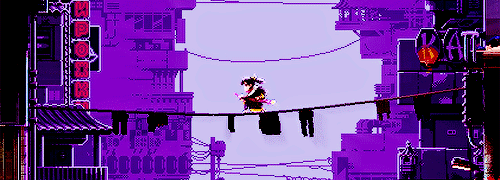
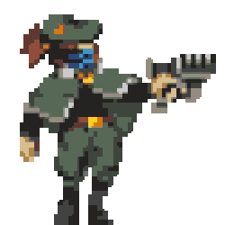

Jugabilidad
Zero puede utilizar una sustancia llamada "Cronos", la cual es un fármaco que le permite manipular el tiempo y predecir el futuro. El juego presenta un sistema de conversación en tiempo real que el jugador puede interrumpir.
Katana Zero no incluye barra de salud y ser golpeado resultará en una muerte instantánea, similar a Hotline Miami. Nuestro personaje navegará a través de los niveles por medio de un desplazamiento lateral, intentando matar a todos los enemigos en ese nivel con su espada o trampas ambientales.
Nuestro personaje podrá desviar las balas con su espada oblicua, ralentizar del tiempo con un medidor que se irá llenando lentamente y esquivar los ataques girando por el suelo. El juego también cuenta con un sistema de conversación en tiempo real que el jugador puede interrumpir.

Reseñas y reviews 
- VANDAL: Katana Zero nos ha gustado mucho. Tarda un poco en arrancar, pero cuando arranca no hay quien lo pare. Es un título que nos permite hacer auténticas locuras, que nos obliga a mejorar, a pesar rápido y a tirar de estrategia para completar los niveles. Audiovisualmente, dentro de su simpleza, hace muchas cosas bien y tiene mucho encanto, y gracias a la interesante historia que cuenta –y lo bien contada que está– nos atrapa hasta el final.
- IGN: Excelente banda sonora que adorna la acción de Katana Zero. Música electrónica estilo synthwave compuesta por Ludowic y Bill Kelly. Todo un detallazo que nuestro samurái se coloque el radiocassette y los auriculares segundos antes de empezar su matanza particular. Las composiciones son machaconas y muy acordes con lo que va aconteciendo en pantalla. Desbordan calidad en todos los sentidos. 
Historia
Katana Zero tiene lugar en una metrópolis neo-noir ficticia llamada Nueva Meca. La trama del juego está fuertemente afectada por una invasión de una nación asiática sin nombre, conocida como la "Guerra Cromag", lanzada por la Nueva Meca o por cualquier gobierno que la controle. Se supone que la facción de la Nueva Meca ha perdido el conflicto resultante.
El jugador controlará a un asesino con katana llamado "Sujeto Zero", apodado "El Dragón", mientras completa varios asesinatos que le dio su psiquiatra, quien también le suministra "Chronos", una droga que le permite ralentizar el tiempo y predecir el futuro.
A lo largo del juego, Zero experimenta las pesadillas recurrentes de un niño en una choza primitiva; un hombre que lleva una bata de laboratorio irrumpe en dicha choza y advierte al niño que se esconda unos momentos antes de que este sea asesinado a tiros por la silueta amenazadora de un soldado. El niño está fuertemente implicado en ser un joven Zero. Comedia y Tragedia también visitan a Zero en repetidas ocasiones, dos hombres con batas de laboratorio y máscaras de teatro, que se burlan de él por un desastre inminente en su futuro.